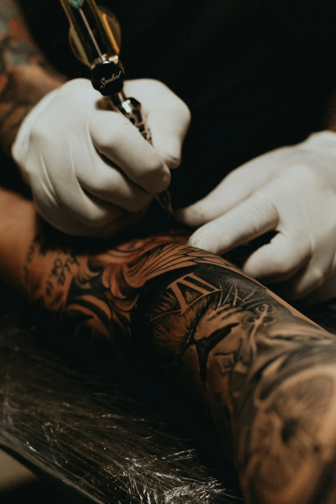
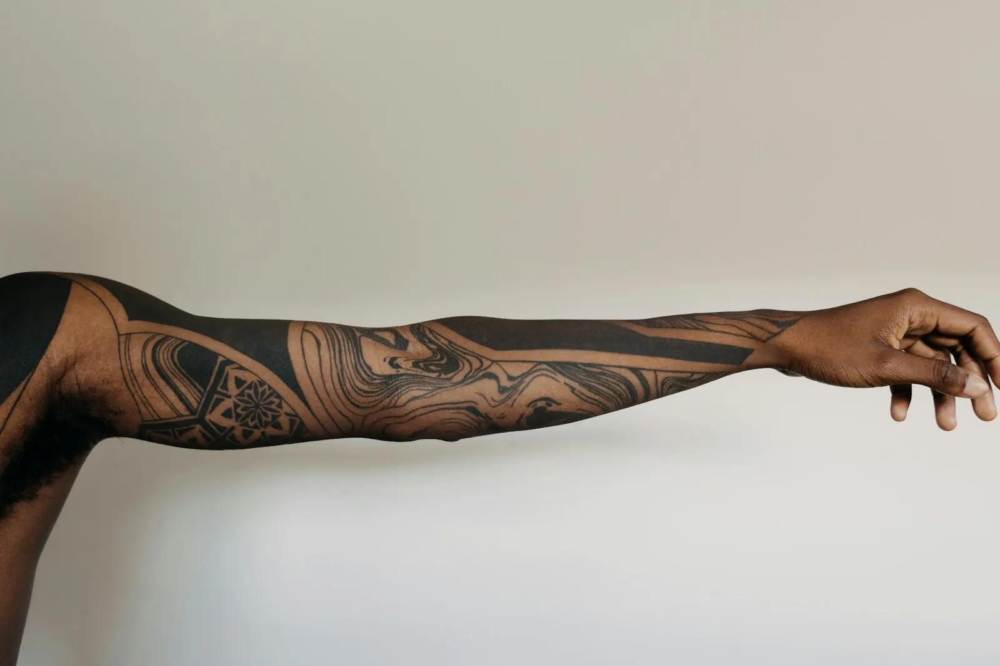
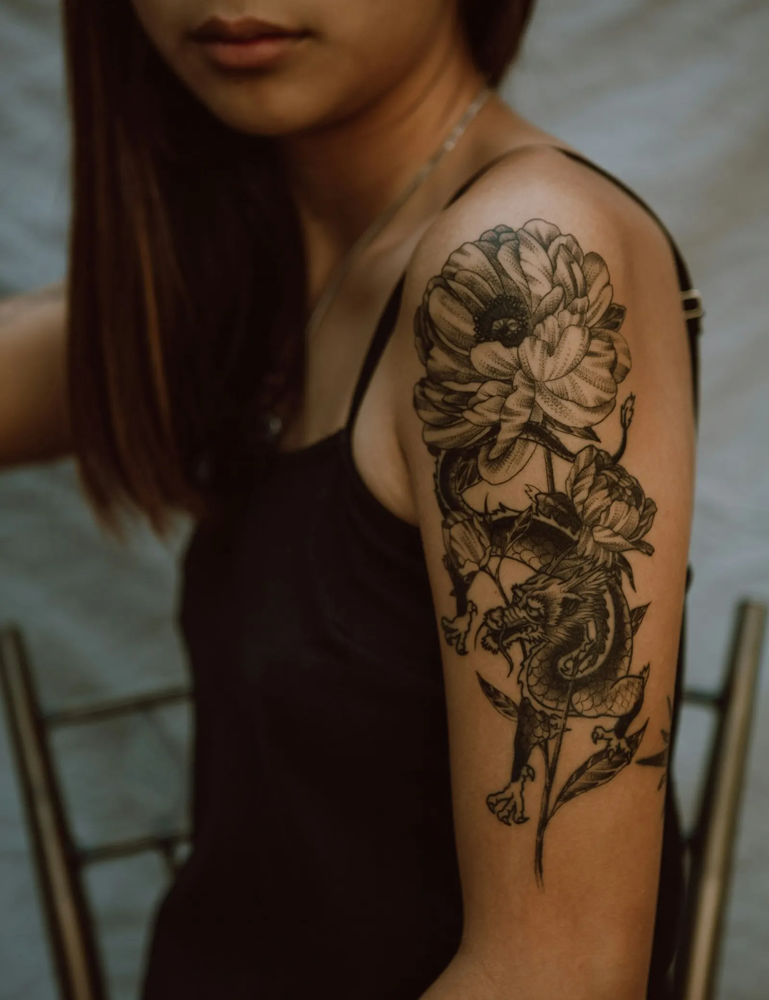

Een tattoo draag je een leven lang. Dus nemen we er de tijd voor.
Bij Tattoo Gille begint alles met een gesprek. Jij vertelt wat je in gedachten hebt, wij werken het uit tot het klopt. Pas als jij er helemaal achter staat, gaat de naald erin.

Van een vaag idee naar iets dat je elke dag graag ziet
Je hoeft niet met een kant en klare tekening binnen te komen. Een foto, een paar woorden of een krabbel op een bierkaartje is genoeg om mee te starten.
Je stuurt je idee
Via WhatsApp of gewoon even bellen. Vertel wat je wil, waar het moet komen en hoe groot je het ziet.
We tekenen het uit
Je ontwerp wordt op maat gemaakt. Iets aanpassen kan altijd, tot je zegt: dit is hem.
De afspraak
Proper materiaal, tijd voor een pauze en geen gehaast. Je mag altijd vragen stellen.
Goed verzorgen
Je krijgt uitleg over de nazorg. En zit je achteraf met een vraag, dan stuur je gewoon een berichtje.
Fijne lijnen, zwart en grijs, groot of klein
Een greep uit het soort werk dat in de studio voorbijkomt. Wil je iets specifieks zien? Vraag het gerust, dan stuur je een paar voorbeelden door.




Twijfel je over grootte of plaats? Stuur een foto van de plek, dan denken we mee.
Vraag het evenKom eens langs met je schets of een foto op je gsm. Een praatje kost niets, en je beslist pas als het goed voelt.
Bel 0476 73 65 15De eerste weken bepalen hoe je tattoo eruitziet
Een tattoo is een wonde die moet genezen. Met deze paar dingen zit je goed. Twijfel je ergens over, stuur dan gewoon een foto.
Laat de folie even zitten
Zoals afgesproken in de studio. Daarna haal je ze er met propere handen af.
Wassen met lauw water
Een milde zeep zonder parfum, voorzichtig deppen met keukenpapier. Niet wrijven.
Dun insmeren
Een dun laagje is genoeg. Te veel crème laat de huid niet ademen.
Niet krabben of pellen
Het gaat jeuken, dat hoort erbij. Laat de korstjes vanzelf loskomen.
Geen zon, zee of zwembad
Zolang het niet volledig genezen is. Daarna altijd zonnecrème, dan blijven de lijnen scherp.

4,6 sterren uit 10 reviews op Google. Lees gerust wat anderen over hun ervaring vertellen, dat zegt meer dan wij zelf ooit kunnen.
Zelf al een tattoo laten zetten bij Gille? Een review helpt altijd.Vertel ons je idee
Er wordt gewerkt op afspraak. Stuur een berichtje met je idee, de plek en een ruwe grootte, dan krijg je zo snel mogelijk antwoord.